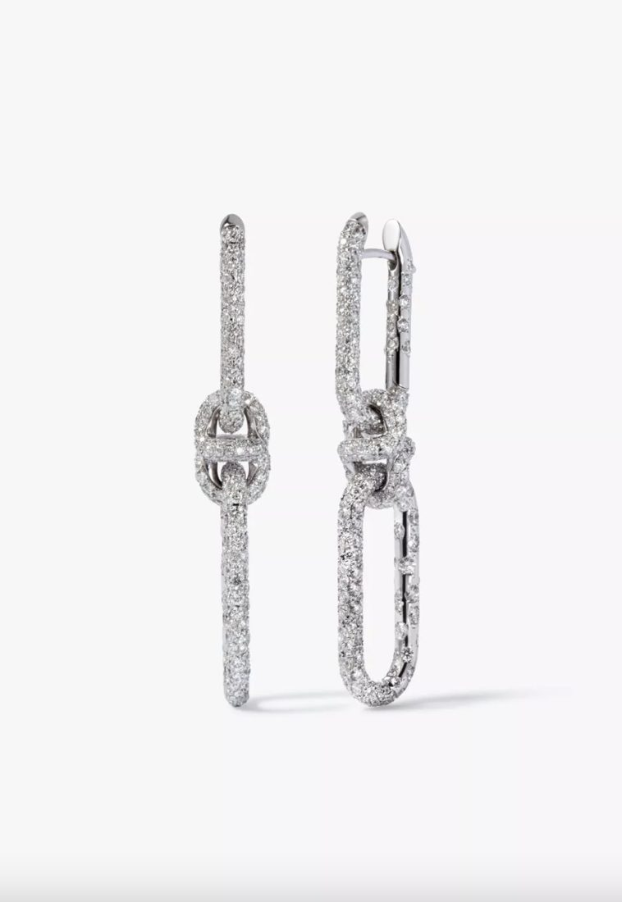
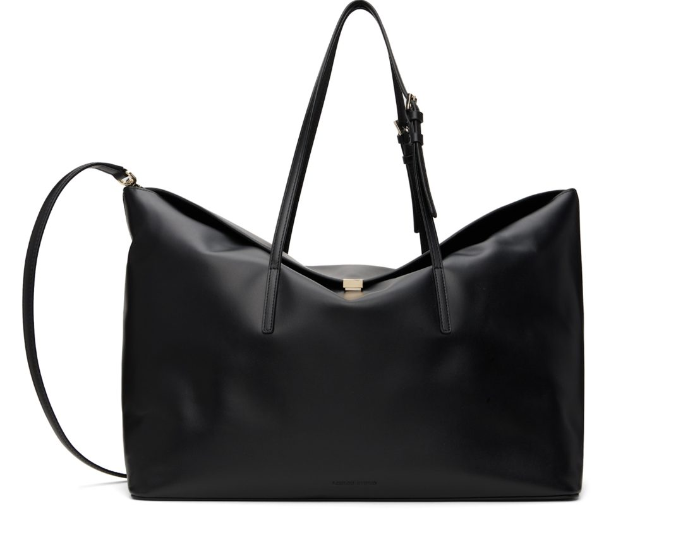
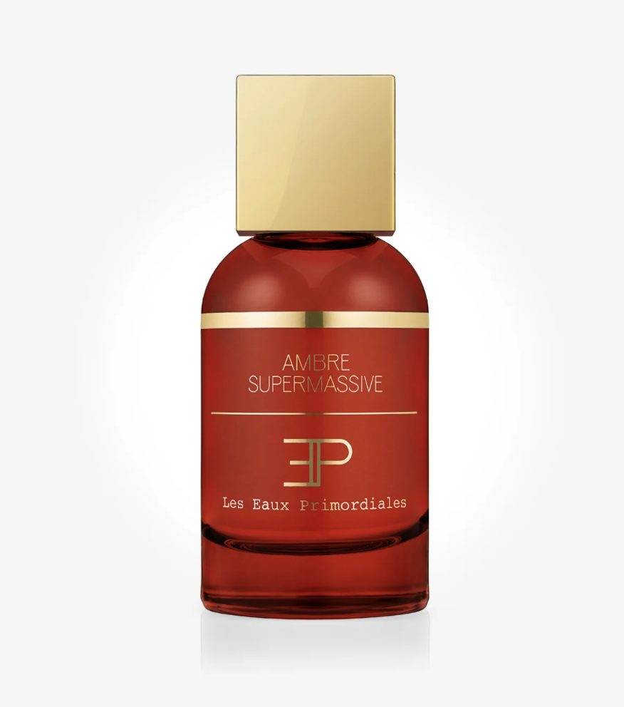
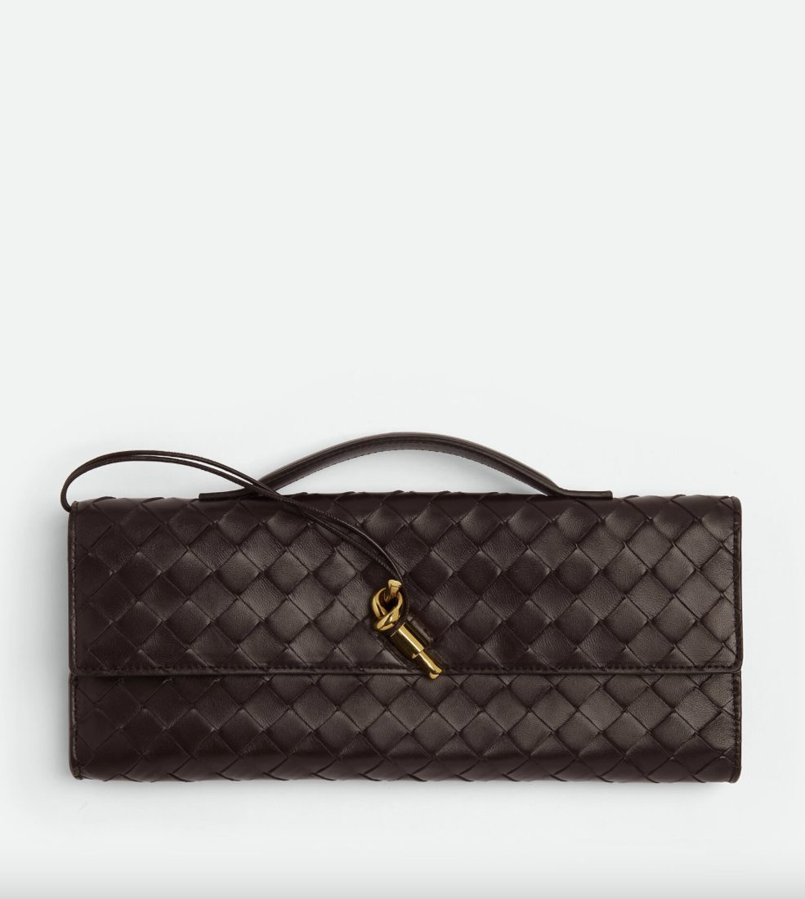

Christmas Wishlist
6 Dec 2024 · Written by Chompak Koonnawarote
Somebody tell Santa
Most days I find myself dilly-dallying around Chelsea and never once have I not come across a gem. A gem in a literal sense and a financially-irresponsible sense (whoops!). Surely writing them down = manifesting, right? Some sparkly, some low-key, some VERY loud. Life is all about balance they say.

Knuckle Dust Double Hoop Earrings
These earrings from Annoushka- let me tell you. One hair flip and your ears will shine so bright the person acros the room can see it. Each diamond is thoughtfully placed so you can wear it forewards and backwards. The design itself allows you to customise whether you’d like just one hoop or both. Genius!

Loulou Studio Black Theodora Tote
The perfect work/travel bag. Its sleek and minimal design lets you wear this with everything. The best part about it? Magnetic closure of course.

Les Eaux Primordiales Ambre Supermassive
Baccarat Rouge’s more refined sister. This is definitely going my next perfume purchase. The scent trail is great and longevity is eternal. The frangrance can be worn alone or layered depending on mood/season. Adds some sweetness and mellows sharpness out.

Bottega Veneta Andiamo Clutch
We’ve got work bags, now we’ve got going out bags. This Andiamo clutch in Pinecone is so chic, as well as the top handle which makes it easier to carry. No more holding the bag in your entire hand! The signature leatherwork of Bottega Veneta is timeless and will definitely be a staple in your wardrobe.